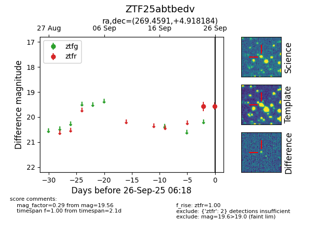

FINK: ZTF25abtbedv
Lasair: ZTF25abtbedv
ALeRCE: ZTF25abtbedv
ZTF25abtbedv (ztf,fink)
equatorial (ra, dec) = (269.4591,+4.91818)
galactic (l, b) = (31.2189,+14.15770)

last ztfr=19.56
2 ztfr detections